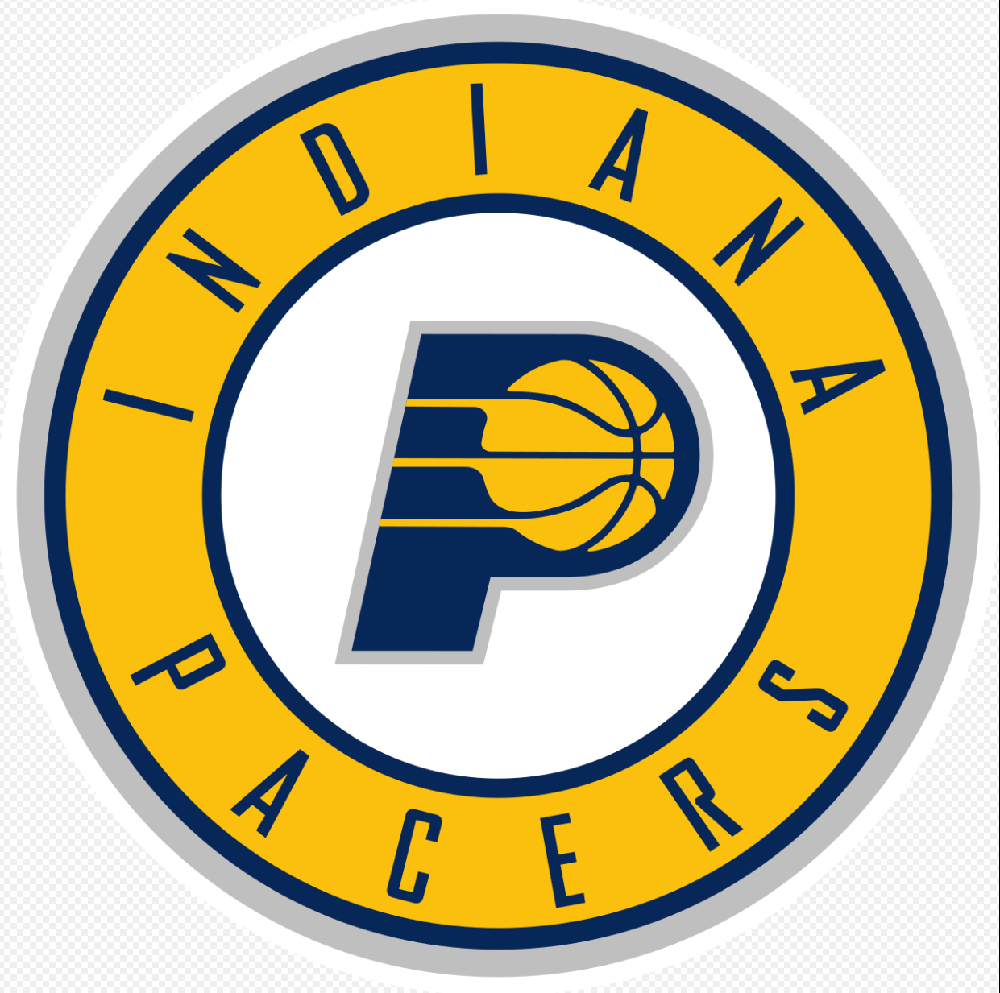
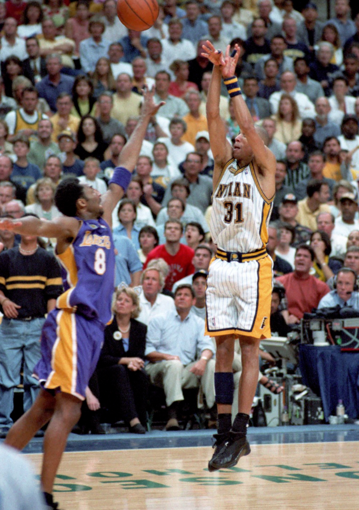
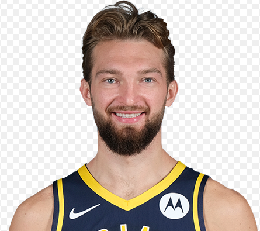

Pacers
The Indiana Pacers are an American professional basketball team based in Indianapolis. The Pacers compete in the National Basketball Association (NBA) as a member of the league's Eastern Conference Central Division. The Pacers were first established in 1967 as a member of the American Basketball Association (ABA) and became a member of the NBA in 1976 as a result of the ABA–NBA merger. They play their home games at Bankers Life Fieldhouse. The team is named after the state of Indiana's history with the Indianapolis 500's pace cars and with the harness racing industry. The Pacers have won three championships, all in the ABA. The Pacers were NBA Eastern Conference champions in 2000. The team has won nine division titles. Six Hall of Fame players – Reggie Miller, Chris Mullin, Alex English, Mel Daniels, Roger Brown, and George McGinnis – played with the Pacers for multiple seasons.
Reginald Wayne Miller (born August 24, 1965) is an American former professional basketball player who played his entire 18-year National Basketball Association (NBA) career with the Indiana Pacers. Miller was known for his precision three-point shooting, especially in pressure situations and most notably against the New York Knicks, for which he earned the nickname "Knick Killer." When he retired, he held the record for most career 3-point field goals made. He is currently second on the list behind Ray Allen. A five-time All-Star selection, Miller led the league in free throw accuracy five times and won a gold medal in the 1996 Summer Olympics.
Miller is widely considered the Pacers' greatest player of all time. His No. 31 was retired by the team in 2006. Currently, he works as an NBA commentator for TNT. On September 7, 2012, Miller was inducted into the Naismith Memorial Basketball Hall of Fame. Miller became a household name during the 1994 Eastern Conference Finals against the Knicks, due to a phenomenal shooting performance in Game 5 on June 1, 1994, in which he scored 39 points (25 in the fourth quarter alone) in the Pacers' 93–86 victory at Madison Square Garden. Miller made several long 3-pointers during the quarter and engaged in an animated discussion of his ongoing performance with noted Knicks fan Spike Lee, who was, as always, seated courtside. The win gave the Pacers a 3–2 series lead over the heavily favored Knicks, but they lost the next 2 games and the series.
Miller's public feud with film director Spike Lee generated controversy for several years in the NBA playoffs.
"Eight points in nine seconds"
On May 7, 1995, Miller scored eight points in 8.9 seconds in Game 1 of the Eastern Conference Semifinals against the Knicks, leading the Pacers to a stunning 107–105 victory. With 18.7 seconds remaining and the Pacers trailing 105–99, Miller took the inbounds pass from Mark Jackson, made a 3-pointer, stole the inbounds pass from Anthony Mason, dribbled back behind the arc and tied the game with another 3, stunning the crowd at Madison Square Garden. On the ensuing possession, Knicks guard John Starks was fouled by Sam Mitchell. Starks missed both free throws, and although Patrick Ewing managed to get the offensive rebound, his shot was just a bit long and hit the back rim. Miller got the rebound and was fouled with 7.5 seconds left. He made both free throws. Trailing by 2, New York had one last chance to win the game but failed to get a shot off, giving the Pacers a shocking 1–0 lead in the best-of-seven series.
The Pacers outlasted the Knicks in seven games before losing to the Orlando Magic in the Conference Finals in seven games, just like the previous year. Near the end of the 1996 season, Miller fell to the floor and suffered an eye injury, leaving him unable to play in the playoffs until Game 5 of the first round against the Atlanta Hawks, where he wore goggles. The Pacers lost to the Hawks and were eliminated.
Around this time, Miller hosted a talk show on WTHR called The Reggie Miller Show. After missing the playoffs in the 1997 season, the Pacers returned to the postseason in 1998. They defeated the Cleveland Cavaliers and Knicks en route to the Eastern Conference Finals where they faced Michael Jordan and the defending champion Bulls. On May 25, 1998, the Pacers trailed Chicago 2–1 in the series and were behind 94–93 in Game 4 at home in Market Square Arena with 2.9 seconds left. Miller got free from Jordan, caught the inbound pass from Derrick McKey, turned and made a game-winning 3-pointer with 0.7 seconds to go. The Pacers eventually pushed the series to a decisive Game 7 in Chicago, a game in which the Pacers led in the fourth quarter before fading in the final two minutes. The Bulls won 88–83 and went on to win their sixth and final championship of the Michael Jordan/Scottie Pippen era.
Following Jordan's retirement, Miller and the Pacers were considered one of the favorites in the East heading into the lockout-shortened 1999 season. After earning the #2 seed in the East, the Pacers once again met the Knicks in the Eastern Conference Finals. That series came to a disappointing end for Indiana, as the eighth-seeded Knicks upset the Pacers in six games. In the decisive sixth game, Miller had one of the worst performances of his career, scoring just 8 points on 3-of-18 shooting from the field. He also missed seven of his eight 3-point attempts.
Domantas Sabonis (born May 3, 1996) is a Lithuanian-American professional basketball player for the Indiana Pacers of the National Basketball Association (NBA). He previously played in Spain for Unicaja Málaga's junior and senior teams before playing two seasons of college basketball for Gonzaga. He is the son of the Basketball Hall of Famer Arvydas Sabonis, and was born in Portland, while his father was playing for the Portland Trail Blazers.